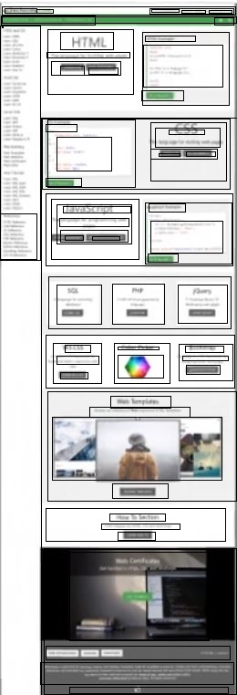
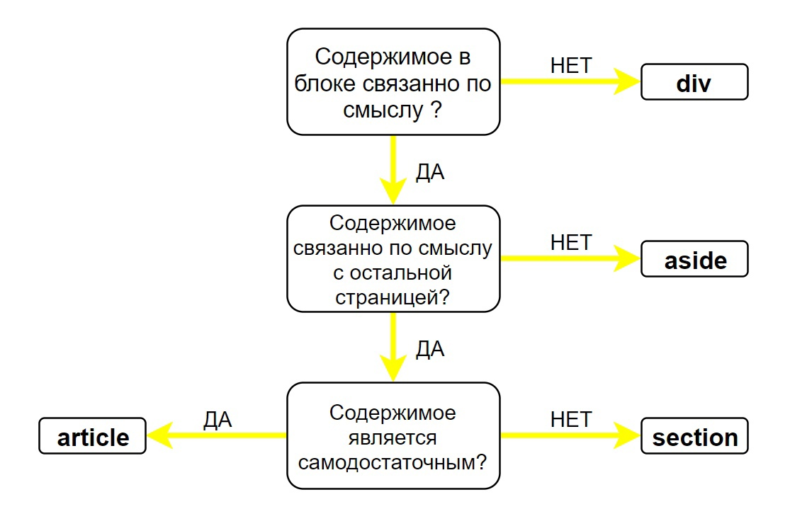
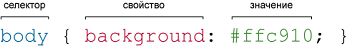

Как сделать сайт.
Инструкция.
- Сoздаем пустой репозиторий на GITHUB. Если создаем с файлом возможен конфликт коммитов.
- Создаем директорию нашего проекта -
mkdir test. Переходим в нее -cd /c/windows2/000/0Projects/MyPublicSiteAboutFrontend/. - Создаем нужные файлы -
touch index.html index.js index.css index.scss .gitignore README.md. .gitignore- файл для внесения в него информации по файлам и папкам, которые не добавляются в GIT.npm init- инициализируем mpm пакет. Отвечаем на вопросы.- Обязательно добавляем в файл package.json строку -
"type": "module",. Она нужна для работы модулей - системы импортов. echo 'console.log("Hello, World!")' > index.jsи затемnode index.js- проверяем работу JS.npm install lodash- инициализируем нужные библиотеки. В нашем случае lodash.echo "import _ from 'lodash'" >> index.js- добавляем lodash в файл JS.npm ci- запускаем установку добавленных зависимостей.echo 'node_modules/' >> .gitignore- добавляем в файл для игнорирования директориюnode_modules.npm install --save-dev jest- инсталлируем документы только для разработки. Они добавляются в devDependencies.npm install --production- инсталляция для продуктива.npm install --save-dev prettier- при необходимости устанавливаем prettier.npx prettier --write- инициализируем его.npm install --save-dev eslint- устанавливаем линтинг.npx eslint --init- инициализируем его. Отвечаем на вопросы. Используем AIRHUB.npx eslint- запускаем линтер.- Добавляем в файл index.js -
const a = [1, 2, 3, 4, 5, 2, 1];иconsole.log(_.uniq(a));. затем проверяем работу lodash -node index.js npm install -g sass- инсталлируем SASS.sass -i- Запуск интерактивной оболочки SASS.sass index.scss index.css- Указываем путь от файла scss до файла css.sass --watch- Автоматическое изменение файла css.sass ---update- Ручное изменение файла css.sass -i- Запуск интерактивной оболочки SASS.pug index.pug --pretty- трансляция из pug в html- Инициализируем GIT -
git init. git add .- добавляем все файлы в индекс GIT.git commit -m 'add all'- запоминаем все файлы в GIT.- Связываем локальный репозиторий с GITHUB.
git remote add origin git@github.com:Tamaxan/test.gitgit branch -M maingit push -u origin main
Команды появляются при создании репозитория в GITHUB. Их лучше копировать во избежание ошибок.
- Инструкция по размещению сайта на GITHUB.
npm i --save-dev jest- Инсталлируем библиотеку jest для тестов.- Создаем директорию для тестов
__tests__. И в нем файлы напримерindex.test.js -
import 'reverse' from '../src/index.js'; test('описание функции', () => { expect(reverse('howdy')).toEqual('ydwoh'); expect(reverse('')).toEqual(''); }); - Запуск тестов -
NODE_OPTIONS=--experimental-vm-modules npx jest - Проверка покрытия тестами -
NODE_OPTIONS=--experimental-vm-modules npx jest --coverage
- Создаем директорию для тестов
Как разместить сайт на хостинге.
Инструкция.
- Выбираем и регистрируем доменное имя.
- ВЫбираем и покупаем хостинг.
- Регистрируемся на cloudflare.com, прописываем DNS у домена выданные cloudflare, добавляем A запись в DNS зоне на IP адрес сервера у хостера. Выполнение данного пункта под вопросом.
- Переносим сайт на хостинг:
- В программе PHPadmin на компьютере сохраняем файл с базой данных нашего проекта в формате SQL.
- Создаем базу данных на хостинге.
- Открываем PHPadmin на хостинге, в меню открываем SQL и копируем в него все данные из нашего сохраненного файла с базой данных.
- Сохраняем нажимая -
GO - Идем в строку wp_options, в ней в siteurl и home вносим адрес нашего сайта с хостинга - https//maksielm.beget.tech
- Скачиваем программу Filezilla - FTP клиент.
- Вносим данные в Filezilla, Хост - IP адрес, Имя пользователя и пароль с хостинга.
- Копируем все файлы из папки с нашим проектом с локального компьютера на хостинг.
- Если есть ошибки при копировании - неудавшиеся передачи делаем это.
- На хостинге в файле wp-config.php заполняем данные в четырех строках
/** The name of the database for WordPress */- имя базы данных
define( 'DB_NAME', '__________' );
/** Database username */- имя пользователя.
define( 'DB_USER', '__________' );
/** Database password */- пароль.
define( 'DB_PASSWORD', '__________' );
/** Database hostname */-наименование базы данных в beget это как правило -localhost.
define( 'DB_HOST', '__________' );
- Всё сайт должен начать работать в зависимости от скорости обновления хостинга.
- На хостинге удаляем лишние файлы с информацией, которая может быть использована злоумышленниками. Это license.txt и readme.html
- В Filezilla устанавливаем права доступа ко всем файлам на 644. И применяем ко всем файлам, но не каталогам.
- В Filezilla устанавливаем права доступа ко всем файлам на 755. И применяем ко всем каталогам, но не файлам.
Разное.
- Имена файлов и папок всегда должны быть в нижнем регистре.
- Разделение между словами должно осуществляться дефисом, а не пробелом.
Полезные команды.
cat README.md- показ содержимого файла в командной строке.echo 'Only for testing' > README.md- запись в файл.echo 'Only for testing' >> README.md- добавление в файл.npm install react react-dom- установка React.
LifeHack
rm -R node_modulesудаления каталога со всеми подкаталогами
HyperText Markup Language
Lifehacks.
Для создания сайта и правильного создания структуры HTML Делаем разметку сайта. 
Block element
- Начнётся с новой строки.
- Будет расширяться вдоль строки таким образом, чтобы заполнить всё пространство, доступное в её контейнере. В большинстве случаев это означает, что блок станет такой же ширины, как и его контейнер, заполняя 100% доступного пространства.
- Будут применяться свойства width и height.
- Внешние и внутренние отступы, рамка будут отодвигать от него другие элементы
Inline element
- Он не будет начинаться с новой строки.
- Свойства width и height не будут применяться.
- Вертикальные внешние и внутренние отступы, рамки будут применяться, но не будут отодвигать другие строчные элементы.
- Горизонтальные внешние и внутренние отступы, рамки будут применяться и будут отодвигать другие строчные элементы.
Применение <DIV>, <SECTION>, <ARTICLE> и <ASIDE>
Принимая во внимание особенности элементов, которые мы рассмотрели выше, получаем простой алгоритм для определения нужного тега в каждой ситуации:
- — если контент не является семантически связанным — используется <div>.
- — если контент семантически связан и относительно независим от остального содержимого страницы — используется <article>.
- — если контент связан с содержимым всей страницы — используется <section>.
- — тег <aside>, как было замечено выше, используется для обособления контента, который связан по смыслу между собой, но при этом не связан (слабо связан) с остальным содержимым страницы.
Для простоты восприятия проиллюстрируем всё это графически:
Правила оформления HTML-кода
- !DOCTYPE. Первой строчкой в HTML-документе должен идти актуальный
doctype. Это необходимо чтобы браузер верно отображал страницу. Это обеспечит единообразное отображение во всех современных браузерах. - Кодировка символов в html-документе всегда должна быть указана явно. Это обеспечит верное отображение текста. Кодировка utf-8 подходит всегда, за редким исключением. Используйте UTF-8 (без BOM).
- Атрибут языка.Для элемента
<html>в атрибутеlangдолжен указываться верный язык документа. Это помогает системам перевода определить, какие использовать языковые правила. - Файлы со стилями подключаются внутри тега
<head>при помощи<link>. Атрибутtypeдля тега<link>указывать не нужно, так как значениеtext/cssустанавливается по умолчанию. - Скрипты при загрузке блокируют отображение содержимого страницы. По этой причине следует подключать их в самом конце html-документа.
- При подключении скриптов в теге
<script>атрибутtypeуказывать не нужно, так как значениеtext/javascriptустанавливается по умолчанию. - Синтаксис:
- Используем два пробела в качестве отступа. Не используйте табуляцию и не смешивайте табуляцию с пробелами. Отступы позволяют визуально оценить структуру документа и быстро переключаться между его фрагментами. Размер отступа настраивается в редакторе. Также во многих редакторах можно включить отображение пробельных символов и преобразовать отступы.
- Теги, атрибуты, значения атрибутов, селекторы, названия элементов, все кроме текста, записываются в нижнем регистре. Символы нижнего регистра не привлекают к себе большого внимания, и вам легче будет найти нужный.
- Отдельные логические блоки отбиваются пустой строкой. Это облегчает работу с кодом и визуально создает структуру документа.
- При написании значений атрибутов используйте только двойные кавычки.
- Используем тэги по назначению
- Не ставим пробелов перед и после символа =.Поскольку правая часть непосредственно относится к левой, то атрибут и его значение должны быть написаны без пробелов.
- Между атрибутами один пробел. Не используем переносов строк между атрибутами, только один пробел. Перенос строк принят в css-документах, но не в html-разметке. Пишите все атрибуты элемента в строку.
- Пробелы в конце строк не обязательны и усложняют использование.
- Не используйте закрывающий слэш у одиночных тегов (
<img>,<br>и другие). Этот элемент является пережитком прошлого, когда HTML был более строгим, а браузеры не умели распознавать и исправлять ошибки.
- Html-документ должен проходить проверку на валидность. Для проверки используйте HTML validator.
- Атрибуты и их порядок. У HTML-элементов атрибут
classпишется первым. Единообразное написание помогает легче считывать код и по классам быстрее разбираться в назначении блоков. - Остальные атрибуты могут быть расставлены в любом порядке, но тоже единообразно для схожих элементов.
- Для логических атрибутов (например,
checked,disabled,required) значение не указывается, а сами атрибуты указываются последними и в единообразной последовательности во всём документе. - Подписи.Для улучшения опыта пользователя, при нажатии на подпись поля, само поле должно
активироваться. Для этого поле формы связывается с описанием при помощи идентификатора и
атрибута
forтега<label>.
Cascading Style Sheets
Introduction
Первым имеет приоритет внутренний стиль, затем глобальный стиль и в последнюю очередь связанный стиль
При добавлении нескольких классов они могут содержать одинаковые стилевые свойства, но с разными значениями, то берётся значение у класса, который описан в коде ниже.
По своей логике дочерние селекторы похожи на селекторы контекстные. Разница между ними следующая. Стиль к дочернему селектору применяется только в том случае, когда он является прямым потомком, иными словами, непосредственно располагается внутри родительского элемента. Для контекстного селектора же допустим любой уровень вложенности.
Имена классов чувствительны к регистру, например .Menu и .menu будут рассматриваться в CSS, как два разных класса.
Каждый идентификатор может встречаться на странице только один раз, т.е. определенный id должен быть использован на странице только с тем тегом, для которого он предназначен. Если один и тот же идентификатор будет применен более, чем к одному элементу, во-первых HTML код не пройдет валидацию, во-вторых это может вызвать некорректную обработку кода браузером и вы можете увидеть не тот результат, которого ожидали.
По умолчанию размер шрифта в браузерах равен 16px. Таким образом, значение 100% соответствует 16px, а 200% - 32px.
Предупреждение: Важно: Если свойство или значение не определено, то объявление считается недействительным — и будет попросту проигнорировано.
Предупреждение: Важно: В CSS (и прочих веб-стандартах) американское написание является стандартом. Например, color надо всегда писать color; британский вариант colour не будет работать.
Универсальный селектор (*), комбинаторы (+, >, ~, '') и псевдокласс отрицания (:not) не влияют на специфичность.
При объединении селекторов таким образом, при условии если хоть один селектор будет недействительным, всё правило будет пропущено
Ключевой момент, который нужно понимать в отношении внешних отступов (margin), это концепция схлопывания. Если у вас есть два соседних элемента, внешние отступы которых соприкасаются, и оба значения margin положительные, то эти значения будут объединены в одно, равное большему из двух значений. А если одно или оба значения отрицательны, то сумма отрицательных значений будет вычтена из общей суммы.
Порядок расположения селекторов для ссылок, важен так как стили ссылок опираются друг на друга, например стили в первом правиле будут применяться ко всем последующим правилам и когда ссылка будет активирована, она также будет находиться под "наведением" (hover). Если вы введёте их в неправильном порядке, стили не будут работать правильно. Чтобы запомнить этот порядок вы можете попробовать использовать мнемонику типа LoVe Fears HAte.
Рекомендуется использовать border, когда вы хотите установить все свойства границ одновременно. Тогда как универсальные свойства border-width, border-style (en-US), и border-color (en-US) принимают до четырёх значений, позволяя установить различные значения для каждого ребра, border принимает единственное значение для каждого свойства. И этот стиль применяется для всех четырёх границ.
Positions
Позиция absolute определяется относительно родительского элемента с позицией
relative, причем не смотря на то, что позиция relative установлена
по умолчанию, для ее применения, нужно указывать явно в родительском элементе.
При указании позиционирования нужно стараться указывать относительное позиционирование в %, а не в px, а в идеале нужно размещать элементы так, чтобы у них были нулевые отступы.
Selectors
Специфичность селекторов (selector's specificity) определяет их приоритет в таблице стилей. Чем специфичнее селектор, тем выше его приоритет. Для вычисления специфичности селектора используются три группы чисел (a, b, c), расчёт производится следующим образом:
- Считается число идентификаторов в селекторе (группа a)
- Считается число селекторов классов, атрибутов и псевдо-классов в селекторе (группа b)
- Считается число селекторов типа и псевдо-элементов в селекторе (группа c)
- Селектор внутри псевдо-класса отрицания (:not) считается как любой другой селектор, но сам псевдо-класс отрицания не участвует в вычислении селектора
- Универсальный селектор (*) и комбинаторы не участвуют в вычислении веса селектора

Самый высокий приоритет имеет число из группы «a», число группы «b» имеет средний приоритет, число из группы «c» имеет наименьший приоритет. Числа из разных групп не суммируются в одно общее, т.е. возьмём из примера последнюю строку со специфичностью селектора «101» - это не означает число «сто один», это значит, что был использован один селектор из группы «a» (идентификатор) и один селектор из группы «c» (селектор типа).
Встроенный стиль, имеет больший приоритет, чем стиль определённый во внутренней или внешней таблице стилей. Однако, если для конкретного свойства во внутренней или внешней таблице стилей указать специальное объявление !important, то оно будет иметь больший приоритет, чем значение аналогичного свойства, у внутреннего стиля. Объявление !important указывается после значения свойства перед точкой с запятой:
При создании стиля для сайта, когда одновременно используется множество селекторов, возможно появление повторяющихся стилевых правил. Чтобы не повторять дважды одни и те же элементы, их можно сгруппировать для удобства представления и сокращения кода
Pseudo-classes
Псевдоклассы определяют динамическое состояние элементов, которое изменяется с помощью действий пользователя, а также положение в дереве документа. Вначале указывается селектор, к которому добавляется псевдокласс, затем следует двоеточие, после которого идёт имя псевдокласса.
Pseudo-elements
Псевдоэлементы позволяют задать стиль элементов не определённых в дереве элементов документа, а также генерировать содержимое, которого нет в исходном коде текста.
Псевдоэлементы не могут применяться к внутренним стилям, только к таблице связанных или глобальных стилей.
Каждый псевдоэлемент может применяться только к одному селектору, если требуется установить сразу несколько псевдоэлементов для одного селектора, правила стиля должны добавляться к ним по отдельности
Directory
Правила оформления CSS-кода
- Синтаксис:
- В конце строки должна стоять точка с запятой.После пары свойство: значение обязательно ставится точка с запятой. Без этого знака препинания не будет работать правило в этой строке и следующее за ним.
- Для отступов внутри правил используйте два пробела. Правила, которые перечисляются внутри фигурных скобок, должны отстоять от начала строки. Для этого используйте 2 пробела. Это позволяет сразу видеть блоки свойств, относящихся к одному селектору.
- 1.3 Значение цветов не сокращается. Если цвет задан в шестнадцатеричной системе,
то значение не сокращается, а пишется полностью код из всех шести символов. Для
записи используйте строчные буквы. Например,
#e3e3e3. - Вce названия тегов и свойства пишутся строчными буквами.
- Нули не пропускаются. Если число дробное и начинается с нуля, то он не
опускается (например,
.5вместо0.5). - В стилях всегда без исключения используются двойные кавычки. Если кавычки не обязательны, то они пишутся все равно.
- В правилах после двоеточия ставится один пробел (
top: 10px;). При этом перед двоеточием пробел не нужен. - Пробелы после запятой в цветах. После запятых внутри значений
rgb(),rgba(),hsl(),hsla()илиrect()пробелы ставятся. Это улучшает читаемость. - Между селекторами до и после комбинатора (например,
p > a) ставится один пробел. - Каждое свойство с новой строки. Одно свойство-одна строка. Каждое объявление в правиле пишется на новой строке.
- >После селектора и перед открывающейся фигурной скобкой ставится один пробел. После открывшейся скобки запись идёт с новой строки.
- Закрывающая фигурная скобка после набора свойств пишется на новой строке и без отступа. Она должна быть на одном уровне с селектором. Следующее после этого правило отделяется пустой строкой.
- >Единицы измерения не нужно писать там, где без них можно обойтись. Например,
border: 0.
- Порядок свойств
Порядок логически связанных свойств должен быть сгруппирован следующим образом:
- Позиционирование
- Блочная модель
- Типографика
- Оформление
- Анимация
- Разное
Позиционирование следует первым, поскольку оно влияет на положение блоков в потоке документа. Блочная модель определяет размеры и расположение блоков и идёт следующей.
Все прочие объявления, которые изменяют вид внутренних частей блоков и не влияют на другие блоки, идут в последнюю очередь.
Сгруппированные свойства в правиле отделяются друг от друга пустой строкой.
Порядок объявления подробных правил, таких как
font-size,font-family,line-height, должен соответствовать порядку в сокращённой версии правила. В случае совместного использования подробных и сокращённых правил, первой должна идти сокращённая версия..selector-item { /* Позиционирование */ position: fixed; top: 0; right: 0; bottom: 0; left: 0; z-index: 100; /* Блочная модель */ display: inline-block; float: left; width: 150px; height: 150px; margin: 25px; padding: 25px; /* Типографика */ font: normal 13px/1.5 "Helvetica", sans-serif; font-style: normal; font-size: 13px; line-height: 1.5; font-family: "Helvetica", sans-serif; text-align: start; /* Оформление */ color: #999999; background-color: #e3e3e3; border: 1px solid #333333; border-radius: 5px; opacity: 1; /* Анимация */ transition: all 0.8s; /* Разное */ will-change: auto; } - Имена классов
- Имена классов пишутся строчными буквами, между несколькими словами используется
дефис (но не знак нижнего подчёркивания или camelCase). Дефисы служат
разделителями во взаимосвязанных классах (например,
.buttonи.button-cancel). - Имена блоков который состоит из элементов следует делать из двух, трех слов разделенных дефисом. Имена элементов из одного слова.
- Имена должны быть такими, чтобы по ним можно было быстро определить, какому
элементу на странице задан класс: избегайте сокращений (единственное исключение
—
.btnдля кнопок), но не делайте их слишком длинными (не более трёх слов). - Для именования классов используются английские слова и термины. Не используйте транслит для названия классов и атрибутов.
- Class для элементов нельзя писать отдельно, они всегда должны находиться в каком то блоке. Уточнить корректность правила.
- Имена классов пишутся строчными буквами, между несколькими словами используется
дефис (но не знак нижнего подчёркивания или camelCase). Дефисы служат
разделителями во взаимосвязанных классах (например,
- Правило
@importработает медленнее, чем тег<link>. В стилях@importиспользовать не желательно. - Варианты шрифта
Альтернативные варианты шрифта и тип семейства указываются в конце перечисления значений font-family.
В случае использования нестандартных шрифтов обязательно указывать альтернативный веб-безопасный шрифт и тип семейства, чтобы в случае отсутствия нестандартного шрифта в системе изменения внешнего вида страницы были минимальны. Нестандартный и альтернативный шрифты должен быть одного типа.
Порядок шрифтов следующий:
- нестандартный шрифт;
- веб-безопасный;
- тип семейства шрифта.
Список веб-безопасных шрифтов можно посмотреть здесь — cssfontstack.com.
JavaScript
JavaScript(JS) - это язык программирования для браузера, придающий страницам динамичность и интерактивность.
Символ $заключенный в фигурные кавычки {$}, позволяет добавлять в
строку выражение.
Работает только при применение обратных кавычек `строка{$}строка`.
Постфиксная форма i++(возвращает текущее, а потом увеличивает), она отличается
от
префиксной
++i, которая сначала увеличивает а потом возвращает измененное значение.
Квадратные скобки [] позволяют обратиться к свойству, имя которого может быть
результатом выражения.
Например, имя свойства может храниться в переменной.
При выполнении условий - Все что не является false будет true.
Всего существует 8 значений false. Это:
false0-0''nullundefinedNaN0n(BigInt)
Все остальное это true.
Основные определения.
- Аргумент
- Значение, передаваемое в качестве параметра функции.
- Объект
- это самостоятельная единица, имеющая свойства и определённый тип. Объект как правило состоит из нескольких значений и свойств, а также методов.
- схема создания:
var имяОбъекта;
имяОбъекта = {
имя: 'значение'
имя1: 'значение1'
метод: function() {
return this.имя + '' + имя1;
}; - Лексема(токен)
- это минимальная часть языка, имеющая самостоятельный смысл. В JavaScript к лексемам
относятся: разделители,
идентификаторы, литералы, операции, операторы и т.д. Лексемы располагаются между
разделителями (пробелами,
табуляцией или переносом строки). Интерпретатор разделяет код программы на лексемы и
затем
собирает из них
осмысленные конструкции (
myLexeme = "строка";- тут 6 лексем). - Идентификатор
- это уникальное имя переменной, константы, пользовательской функции, объекта, массива,
ключевых и
зарезервированных слов, меток и т.д. Примеры идентификаторов:
var myIdentifier;-тут два идентификатора (varиmyIdentifier)function myIdentifier() { }-тут два идентификатора - Литерал
- это значение переменной заданное программистом, оно может быть числом, строкой,
логическим
значением
(true/false), регулярным выражением (для поиска по шаблону) и т.д. Значение созданное
программой, литералом
не является. Пример литерала: var
myLiteral; - Операнд
- это левая или правая часть операции. Примеры операндов: var myOperand;
myOperand=8 + 2;-здесь в качестве операндов выступаютmyOperand,8 и 2. Здесь в качестве операций выступают:+и=, в качестве выражений:8 + 2иmyOperand = 10, в качестве строки кода (инструкции):myOperand = 8 + 2; - Операция
- это специальные знаки которые манипулируют операндами, они бывают следующих видов:
- Присваивания
=, - Арифметические
+,-,*,/,%, - Сравнения
==,>,>=,<,<=,!=,!==,===, - Логические
&&,||,!,!!.
- Присваивания
- Оператор
- это символы или ключевые слова, которые указывают движку JavaScript на выполнение каких-либо действий.
- под операторами обычно имеют ввиду операторы ветвления:
if,if else,if else ifswitch, операторы циклов:for,while,do whileforeach. Оператор ветвления также еще называют: условной инструкцией, условным оператором, условной конструкцией. - Строка кода (команда, инструкция)
- указывает совершить какое либо действие, оканчивается точкой с запятой. Пример
инструкции
x = y + z;Разница между инструкцией и выражением, состоит в том, что выражение вычисляет, но ничего не делает, не изменяет программу, а строка кода изменяет. Выражение всегда возвращает значение. - Ключевое слово
- — это часть синтаксиса ядра языка, так называемый предопределённый идентификатор. Его нельзя использовать в качестве имени идентификатора. Примеры ключевых слов: break, delete, function, if и т.д.
- Зарезервированное слово
- это часть синтаксиса ядра языка, которое планируется использовать в будущем, использовать их в качестве идентификатора не рекомендуется. Примеры зарезервированных слов: const, import, int, long и т.д.
- Переменные.
- Это именованная область в оперативной памяти компьютера, которая хранит в себе какие-либо данные: числа, строки, и.т.д. У каждой переменной есть уникальное имя(придумываем сами), обращаясь к переменной по имени, можно получить данные которые она в себе хранит.
- Имена переменных и функций в JavaScript должны начинаться с буквы,
$или символа подчеркивания_(с цифры начинаться не может). Они могут даже содержать эмодзи или иероглифы! Имена переменных придумываем самостоятельно. Идентификаторы регистрозависимы:somethingиSomeThing– это разные переменные. Нельзя использовать в качестве имен зарезервированные слова языка: reserved words. - Для создания переменной нужно использовать одно из трех ключевых слов:
var,letилиconst. - Глобальные переменные - Это переменные, объявленные снаружи всех функций (внешние переменные). Они видимы для любой функции (если только их не перекрывают одноимённые локальные переменные).Желательно сводить использование глобальных переменных к минимуму. В современном коде обычно мало или совсем нет глобальных переменных. Хотя они иногда полезны для хранения важнейших «общепроектовых» данных.
-
var-переменные имеют контекстную область видимости и обладают свойством hoisting (поднятия).let-переменные можно изменять,const-переменные нельзя изменять.- У
letиconstвидимость блочная, и они не поднимаются. - неизменяемость
const-переменных широко используется для присвоения состояния которое не может быть изменено после создания.
- Объявление переменной
- это создание переменной.
- Инициализация переменной
- это присваивание переменной какого-либо значения.
- Тип данных
- это значение присваиваемой переменной, может быть:
- number (число),
- string (строка),
- boolean (логический тип данных),
- object (объект),
- undefined (неопределённый),
- null (отсутствующий).
- NaN
- Not a Number (не число), значение (тип данных) не являющееся числом. NaN появляется,
когда в
вычислениях
появляется ошибка связанная с тем, что один из операндов арифметической операции не
имеет
числового типа
данных.
Пример:
var myVariable = "Строка";alert(5 * myVariable);- выведет NaN - undefined (неопределённая)
- состояние не инициализированной переменной. Появляется когда в сценарии участвует
переменная
которой не
присвоили значения. Пример:
var myVariable;alert(myVariable);- выведет undefinedПеременная объявлена, но не инициализирована, значение у неё undefined. В логическом контексте undefined принимает значение false, в числовом NaN, в строковом "undefined" - null
- это значение которое не имеет типа данных. Например null может появится, при нажатии в
модальном окне на
кнопку «Отмена», данное окно вызывается с помощью функции
promt();. В логическом контексте, nul принимает значениеfalse, в числовом0, в строковом"null" - Массив
- это спископодобные структуры, которые предназначены для хранения упорядоченных данных.
Схема
создания:
Индексы массива начинаются с нуля(0). [0] это первый элемент, [1] это второй элемент. -
var имяМассива;
имяМассива = [ ]; - Выражения
- Выражения – это структурные единицы кода, которые состоят из операндов и операций, которые могут быть вычислена интерпретатором для получения значения.
- Арифметические выражения преобразуются к числу (
1 / 2i++i -= 2i * 2). Строковые - к строке ("привет, " + "мир"'hello, ' += 'world'). Логические - к булеву значению (a && ba || b!a). Литералы, переменные, константы - это тоже выражения (0.02'something'truethisundefinedi), как и некоторые ключевые слова (classfunction), группирующие скобки (()), выражения создания и инициализации ([]function() {}a => a), выражения вызова функций и методов (Math.paw(2, 3)window.resize()). - Функции
- это самостоятельный блок JavaScript-кода, который можно повторно использовать в программе. Особенность функций в том, что их можно вызывать, передавать им аргументы и получать некоторое новое значение. В концепции JavaScript функции являются объектами, а значит могут иметь собственные свойства и методы. Функция может являться аргументом или возвращаемым значением другой функции, а также быть помещенной в переменную.
- Мы можем передать внутрь функции любую информацию, используя параметры.
- Возвращаемое значение
- По умолчанию все функции возвращают
undefined, но с помощью директивыreturnможно вернуть единичное значение любого типа. - Замыкания
- Замыкание – это функция, которая запоминает свои внешние переменные и может получить к ним доступ.
- Эффект замыканий основан на том, что в концепции JavaScript области видимости ограничены функциями. Это сложная тема, которую, тем не менее, необходимо понять для успешной работы.
- схема создания пользовательской функции:
function имяФункция() {
} - Метод
- это функция, ассоциированная с объектом или, проще говоря, метод — это свойство объекта, являющееся функцией. Методы определяются так же, как и обычные функции, за тем исключением, что они присваиваются свойству объекта.
- Цикл
- это блок кода, который повторяет сам себя, пока известное условие остаётся истинным. Существует множество различных видов циклов, но все они по сути делают тоже самое: повторяют какое-либо действие несколько раз.
- Конкатенация
- это операция соединения строк, в качестве операции выступает знак плюс +. Для того чтобы
произошла операция
конкатенации, нужно чтобы один или два операнда имели тип данных string.
Пример:
alert("5" + 3);Данная функция выведет «53», а не 8, поскольку один из операндов имеет тип данных, строка. - Интерпретатор
- это специальная программа, которая понимает код языка и выполняет его команды.
- Метка
- это присвоение идентификатора оператору или блоку кода (обычно: циклам и условным
операторам), что позволяет
вам использовать команды break или continue изнутри. Чтобы применить метку к оператору,
напишите метку
label: и все, что вы укажете внутри будет доступно по имени метки которое вы прописали,
и на
которое вы
можете ссылаться позже.
label: - This
- Значение
thisобычно определяется контекстом выполнения функций. Контекст выполнения – это то, как функция вызывается. Значениеthisустанавливается в ближайший родительский объект вызываемого метода! У объектов нет своего собственногоthis.Существует шесть различных способов работы с this, в каждом из котором оно имеет разное значение:
- в глобальном контексте
- в конструкторе объекта
- в методе объекта
- в простой функции
- в стрелочной функции
- в слушателе событий
- Деструктуризация
- синтаксическая возможность "раскладывать" элементы массива (и не только) в отдельные константы или переменные.
Main Rules
Располагать сценарий (как внешний так и встроенный) лучше всего в конце HTML-документа, перед закрывающим тегом </body>. Такое расположение сценария позволяет браузеру загружать страницу быстрее, так как сначала загрузится контент страницы, а потом будет загружаться код сценария.
Description.
Структурно JavaScript можно представить в виде объединения трёх чётко различимых друг от друга частей:
- ядро (ECMAScript),
- объектная модель браузера (Browser Object Model или BOM),
- объектная модель документа (Document Object Model или DOM).
Ядро
ECMAScript не является браузерным языком и в нём не определяются методы ввода и вывода информации. Это, скорее, основа для построения скриптовых языков. Спецификация ECMAScript описывает типы данных, инструкции, ключевые и зарезервированные слова, операторы, объекты, регулярные выражения, не ограничивая авторов производных языков в расширении их новыми составляющими.
Объектная модель браузера (BOM)
Объектная модель браузера — браузер-специфичная часть языка, являющаяся прослойкой между ядром и объектной моделью документа. Основное предназначение объектной модели браузера — управление окнами браузера и обеспечение их взаимодействия. Каждое из окон браузера представляется объектом window, центральным i DOM. Объектная модель браузера на данный момент не стандартизирована, однако спецификация находится в разработке WHATWG и W3C.
Помимо управления окнами, в рамках объектной модели браузера, браузерами обычно обеспечивается поддержка следующих сущностей:
- управление фреймами,
- поддержка задержки в исполнении кода и зацикливания с задержкой,
- системные диалоги,
- управление адресом открытой страницы,
- управление информацией о браузере,
- управление информацией о параметрах монитора,
- ограниченное управление историей просмотра страниц,
- поддержка работы с HTTP cookie.
Объектная модель документа (DOM)
Объектная модель документа — интерфейс программирования приложений для HTML и XML-документов. Согласно DOM, документ (например, веб-страница) может быть представлен в виде дерева объектов, обладающих рядом свойств, которые позволяют производить с ним различные манипуляции:
- генерация и добавление узлов,
- получение узлов,
- изменение узлов,
- изменение связей между узлами,
- удаление узлов.
Ключевые и зарезервированные слова
Стандарт ECMA-262 определяет набор ключевых слов (keywords), их нельзя использовать в качестве интерпретатора. Полный список ключевых слов:
| break | case | catch | class | const | continue | debugger | default | delete | do |
| else | enum | export | extends | false | finally | for | function | if | implements |
| import | in | instanceof | interface | let | name | new | null | package | private |
| protected | public | return | static | super | switch | this | throw | true | try |
| typeof | var | void | while | with | yield | - | - | - | - |
Типы инструкций, определяемые спецификацией языка
| Название | Оригинальное название | Краткие сведения | Завершающая |
|---|---|---|---|
| Блок | Block | {[<инструкции>]} | − |
| Объявление переменной | VariableStatement | var <список объявления переменных> | + |
| Пустая инструкция | EmptyStatement | ; | + |
| Выражение | ExpressionStatement | [строка до ∉ {{, function}] инструкция | + |
| Условие | IfStatement | if (<инструкция>) <выражение>[ else <выражение>] | − |
| Цикл | IterationStatement | do <выражение> while (<инструкция>) while (<инструкция>) <выражение> for ([<инструкция до начала>]; [<инструкция>]; [<инструкция>]) <выражение> for (<объявление переменных>; [<инструкция>]; [<инструкция>]) <выражение> for (<lvalue-выражение> in <инструкция>) <выражение> for (<объявление переменных> in <инструкция>) <выражение> | +/−[~ 1] |
| Продолжение | ContinueStatement | continue [<идентификатор>] | + |
| Прерывание | BreakStatement | break [<идентификатор>] | + |
| Возврат | ReturnStatement | return [<инструкция>] | + |
| Сочетание | WithStatement | with (<инструкция>) <выражение> | − |
| Метка | LabelledStatement | <идентификатор>: <выражение> | − |
| Выбор | SwitchStatement | switch (<инструкция>) case <инструкция>: [<выражения>][ case <инструкция>: [<выражения>] …] [default: [<выражения>]] | − |
| Генерация исключения | ThrowStatement | throw <инструкция> | + |
| Блок try | TryStatement | try <блок> catch (<идентификатор>) <блок> try <блок>finally <блок> try <блок> catch (<идентификатор>) <блок> finally <блок> | − |
| (новое) Отладчик | Debugger | debugger | − |
Классификация операторов
По убыванию приоритета операторы ECMAScript можно разбить в следующие группы:
- . (доступ к свойству),[] (доступ к свойству),() (вызов функции), new (создание нового объекта),
- ++ (инкремент), -- (декремент), - (унарный минус), + (унарный плюс), ^ (поразрядное дополнение), ! (логическое дополнение), delete (удаление свойства), typeof (определение примитивного типа данных), void (возврат неопределённого значения),
- * (умножение), / (деление), % (остаток от деления),
- + (сложение), - (вычитание), + (конкатенация строк),
- << (сдвиг влево), >> (сдвиг вправо с расширением знакового разряда), >>> (сдвиг вправо с дополнением нулями),
- < (меньше), <= (меньше или равно), > (больше), >= (больше или равно), instanceof (проверка типа объекта), in проверка наличия свойства),
- == (проверка на равенство), != (проверка на неравенство), === (проверка на идентичность), !== (проверка на неидентичность),
- & (поразрядная конъюнкция),
- ^ (поразрядное сложение по модулю 2),
- | (поразрядная дизъюнкция),
- && (конъюнкция),
- || (дизъюнкция),
- ?: (тернарная условная операция),
- = (присваивание), *=, /=, +=, -=, <<=, >>=, >>>=, &=, ^=, |= (присваивание с операцией),
- , (множественное вычисление).
- Операторы ++, --, -, +, ~, !, delete, typeof, void, ?:, =, *=, /=, +=, -=, <<=, >=, >>>=, &=, ^=, |= правоассоциативны (то есть для них a op b op c эквивалентно a op (b op c)).
- Остальные операторы ECMAScript левоассоциативны.
По арности операторы ECMAScript делятся на следующие группы:
- унарные (delete, void, typeof, ++, --, - (унарный минус), + (унарный плюс), ^, !, new),
- бинарные (., [], (), *, /, %, + (сложение), - (вычитание), + (конкатенация строк), <<, >>, >>>, <, <=, >, >=, instanceof, in, ==, !=, ===, !==, &, ^, |, &&, ||, =, *=, /=, +=, -=, <<=, >=, >>>=, &=, ^=, |=, ,),
- тернарные (?:),
- операторы, не имеющие фиксированного количества операндов (()).
По положению знака операции относительно операндов операторы ECMAScript делятся на следующие группы:
- префиксные (например, new, ++ (префиксный инкремент),
- инфиксные (например, +, -),
- постфиксные (например, ++ (постфиксный инкремент), -- (постфиксный декремент).
- Также операторы классифицируются по типу операндов и по характеру осуществляемого действия.
Приоритет операторов
| Приоритет | Тип оператора | Ассоциативность | Конкретные операторы |
|---|---|---|---|
| 19 | Группировка | не определено | ( … ) |
| 18 | Доступ к свойствам | слева направо | … . … |
| 18 | Доступ к свойствам с возможностью вычисления | слева направо | … [ … ] |
| 18 | new (со списком аргументов) | не определено | new … ( … ) |
| 18 | Вызов функции | слева направо | … ( … ) |
| 18 | Оператор опциональной последовательности (?.) | слева направо | ?. |
| 17 | new (без списка аргументов) | справа налево | new … |
| 16 | Постфиксный инкремент | не определено | … ++ |
| 16 | Постфиксный декремент | не определено | … -- |
| 15 | Логическое отрицание (!) | справа налево | ! … |
| 15 | Побитовое отрицание (~) | справа налево | ~ … |
| 15 | Унарный плюс | справа налево | + … |
| 15 | Унарный минус | справа налево | - … |
| 15 | Префиксный инкремент | справа налево | ++ … |
| 15 | Префиксный декремент | справа налево | -- … |
| 15 | typeof | справа налево | typeof … |
| 15 | void | справа налево | void … |
| 15 | delete | справа налево | delete … |
| 15 | await | справа налево | await … |
| 14 | Возведение в степень (**) | справа налево | … ** … |
| 13 | Умножение (*) | слева направо | … * … |
| 13 | Деление (/) | слева направо | … / … |
| 13 | Остаток от деления (%) | слева направо | … % … |
| 12 | Сложение (+) | слева направо | … + … |
| 12 | Вычитание (-) | слева направо | … - … |
| 11 | Побитовый сдвиг влево (<<) | слева направо | … << … |
| 11 | Побитовый сдвиг вправо (>>) | слева направо | … >> … |
| 11 | Сдвиг вправо с заполнением нулей (>>>) | слева направо | … >>> … |
| 10 | Меньше (<) | слева направо | … < … |
| 10 | Меньше или равно (<=) | слева направо | … <= … |
| 10 | Больше (>) | слева направо | … > … |
| 10 | Больше или равно (>=) | слева направо | … >= … |
| 10 | in | слева направо | … in … |
| 10 | instanceof | слева направо | … instanceof … |
| 9 | Равенство (==) | слева направо | … == … |
| 9 | Неравенство (!=) | слева направо | … != … |
| 9 | Строгое равенство (===) | слева направо | … === … |
| 9 | Строгое неравенство (!==) | слева направо | … !== … |
| 8 | Побитовое «И» (&) | слева направо | … & … |
| 7 | Побитовое исключающее «ИЛИ» (^) | слева направо | … ^ … |
| 6 | Побитовое «ИЛИ» (|) | слева направо | … | … |
| 5 | Логическое «И» (&&) | слева направо | … && … |
| 4 | Логическое «ИЛИ» (||) | слева направо | … || … |
| 4 | Оператор нулевого слияния (??) | слева направо | … ?? … |
| 3 | Условный (тернарный) оператор | справа налево | … ? … : … |
| 2 | Присваивание | справа налево | … = … |
| 2 | Присваивание | справа налево | … += … |
| 2 | Присваивание | справа налево | … -= … |
| 2 | Присваивание | справа налево | … **= … |
| 2 | Присваивание | справа налево | … *= … |
| 2 | Присваивание | справа налево | … /= … |
| 2 | Присваивание | справа налево | … %= … |
| 2 | Присваивание | справа налево | … <<= … |
| 2 | Присваивание | справа налево | … >>= … |
| 2 | Присваивание | справа налево | … >>>= … |
| 2 | Присваивание | справа налево | … &= … |
| 2 | Присваивание | справа налево | … ^= … |
| 2 | Присваивание | справа налево | … |= … |
| 2 | Присваивание | справа налево | … &&= … |
| 2 | Присваивание | справа налево | … ||= … |
| 2 | Присваивание | справа налево | … ??= … |
| 2 | yield | справа налево | yield … |
| 2 | yield* | справа налево | yield* … |
| 1 | Запятая / Последовательность | слева направо | … , … |
Функции
Функции в ECMAScript являются объектами. Конструктор, с помощью которого они создаются — Function(). Функции, как и любые другие объекты, могут храниться в переменных, объектах и массивах, могут передаваться как аргументы в другие функции и могут возвращаться функциями. Функции, как и любые другие объекты, могут иметь свойства. Существенной специфической чертой функций является то, что они могут быть вызваны.
Потому что внешняя область переменной в функции, определяется в зависимости от того, где объявлена функция, а не вызвана.
Правила оформления JavaScript-кода
Объекты
- Для создания объекта используйте фигурные скобки. Не создавайте объекты через
конструктор
new Object. - Не используйте reserved words. в качестве ключей объектов. Они не будут работать в IE8.
- Не используйте ключевые слова (в том числе измененные). Вместо них используйте синонимы.
- При создании объектов,на 3 и более элементов, равно как и массивов, содержащих большое
количество
свойств(элементов), и тем самым образующих строки, длиной более 20 символов, необходимо
выполнять ряд
условий:
- Открывающая скобка располагается на той же строке;
- Каждое свойство оформляется на новой строке;
- Пробел после двоеточия;
- Закрывающая скобка располагается на новой строке.
Переменные
- Для именования переменных используйте существительные на английском языке(не транслит!). Имя переменной должно быть осмысленным.
- Имя может состоять из букв, цифр, символов $ и _, не должно начинаться с цифры.
- PascalCase используется для наименования типов и классов.
- SELECTOR_ITEM – для именования констант (значения которых известно до запуска программы и не меняются на протяжении её выполнения);
- camelCase – во всех остальных случаях.
- В имени должно быть не более 3 слов? например: threeWordsVariable а не vatiableOfThreeWords.
- Переменные не использующие функции и свойства объекта именуются существительными.
- Функции и методы объекта именуются глаголами.
Функции
- Имя функции должно быть глаголом на английском языке или начинаться с него. Для имён, состоящих из нескольких слов, используйте camelCase.
- При передаче функции, как аргумент в другую функцию, оформляйте код как в примере ниже:
var arr = ['Яблоко', 'Апельсин', 'Груша'].forEach(function (item, i, arr) { alert(i + ': ' + item + ' (массив:' + arr + ')'); });
Отступы
- Горизонтальные отступы. Отступ при вложенности - 2 пробела на каждый уровень вложенности.
- Вертикальные отступы. Между логическими блоками(циклами, функциями и т.д.) следует оставлять пустую строку. Это делает код более читабельным. Избегайте блоков кода более 9 строк подряд.
Пробелы
- Используйте пробелы между параметрами и не используйте между именем функции и скобкой;
- При создании анонимной функции необходимо использовать пробел перед скобкой;
- Используйте пробелы вокруг операторов.
Скобки - открывающая фигурная скобка располагается на той же строке. Перед скобкой пробел. Закрывающая скобка располагается на новой строке.
Кавычки - всегда в коде скрипта используйте одинарные кавычки, если не требуется иного. Двойные кавычки допустимы, если в этой же строке необходимо использовать апостроф (') или одинарные кавычки для других целей.
Точка с запятой-в конце выражения обязательна точка с запятой. В случае если в файле много скриптов, перед вашим также нужно поставить;.
Комментарии-для пояснения кода используются комментарии. Комментарии не исполняются интерпретатором JavaScript.
- Однострочные комментарии начинаются с двойного слэша
//. За ним обязательно должен идти пробел; - Многострочные комментарии располагаются между
/*и*/. За символом начала комментария обязательно должен идти пробел. Символ конца комментария располагается на новой строке.
Рекомендации
- Не делайте никаких предположений
- Ищите зацепки (hooks) и отношения
- Оставьте обход (traversing) экспертам
- Понимайте браузеры и пользователей
- Имейте представление о событиях
- Играйте хорошо с другими
- Проявляйте заботу о следующем разработчике
Wordpress
Карта для индексации, Плагин - XML Sitemap Generator for Google
Резервная копия сайта. Плагин - UpdraftPlus Backup/Restore
Плагин для создания корректных ссылок - Cyr to Lat enhanced
Figma
Основные команды
Сtrl + C— копировать элемент-
Сtrl + V— вставить элемент -
Сtrl + X— вырезать элемент -
Сtrl + A— выделить все элементы сразу -
I— инструмент пипетка, выбирайте цвет -
>K— менять размер -
V— стандартный инструмент выделения и перемещения -
[— переместить слой назад, за всеми слоями -
]— переместить слой вперед, перед всеми слоями -
Ctrl + Shift + 4— показать/спрятать сетки -
Зажатый Alt— дублировать элементы / фреймы -
Зажатый Ctrl + колесико мыши— приближаться к объектам и отдаляться от них -
Зажатый пробел + зажатая левая кнопка мыши— перемещение по рабочей области -
Shift + A— создать auto layout -
Ctrl + \— убрать или показать интерфейс редактора Фигма
Все команды
Essential
-
CTRL \- Show / Hide UI - Показать / скрыть интерфейс . -
I- Pick color - Пипетка . -
CTRL /- Search Menu - Поиск в меню .
Tools
-
V- Move Tool - Инструмент выделения (перемещения) . -
F- Frame Tool - Создать Фрейм . -
P- Pen Tool - Перо . -
SHIFT P- Pencil Tool - Карандаш . -
T- Text Tool - Текст . -
R- Rectangle Tool - Прямоугольник . -
O- Ellipse Tool - Эллипс . -
L- Line Tool - Линия . -
SHIFT L- Arrow Tool - Стрелка . -
C- Add/Show Comments - Добавить (показать) комментарий . -
I- Rectangle Tool - Прямоугольник . -
O- Pick Color - Пипетка . -
S- Slice Tool - Нож .
View
-
SHIFT R- Rules - Линейки . -
CTRL SHIFT 3- Show Outlines - Показать контуры . -
CTRL ALT Y- Pixel Preview - Пиксельный режим просмотра . -
CTRL SHIFT 4- Layout Grids - Показать (скрыть) сетку . -
CTRL ’- Pixel Grid - Пиксельная сетка . -
CTRL \- Show / Hide UI - Показать / скрыть интерфейс . -
CTRL ALT \- Show Multiplayer Cursors - Показать чужие курсоры . -
ALT 1- Show Layers - Показать слои . -
ALT 2- Show Components - Показать компоненты . -
ALT 3- Show Team Library - Показать библиотеку команды .
Zoom
-
SPACE+Drag- Pan - Перемещение по макету . -
+- Zoom In - Приблизить . -
-- Zoom Out - Отдалить . -
SHIFT 0- Zoom to 100% - Масштаб 1:1 . -
SHIFT 1- Zoom to Fit - Смасштабировать весь макет . -
SHIFT 2- Zoom to Selection - Смасштабировать выделение . -
SHIFT N- Zoom to Previous Frame - Смасштабировать к предыдущему фрейму . -
N- Zoom to Next Frame - Смасштабировать к следующему фрейму . -
PAGE UP- Previous Page - Предыдущая страница . -
PAGE DOWN- Next Page - Следующая страница . -
HOME- Find Previous Frame - Найти предыдущий фрейм . -
END- Find Next Frame - Найти предыдущий фрейм .
Text
-
CTRL B- Bold - Сделать текст жирным . -
CTRL I- Italic - Наклонить текст . -
CTRL- U - Подчеркнуть текст . -
CTRL SHIFT V- Paste and Match Style - Вставить в левый верхний угол выделенного объекта . -
CTRL SHIFT L- Text Align Left - Выровнять текст по левому краю . -
CTRL SHIFT T- Text Align Center - Выровнять текст по центру . -
CTRL SHIFT R- Text Align Right - Выровнять текст по правому краю . -
CTRL SHIFT J- Text Align Justified - Выровнять текст по ширине . -
CTRL SHIFT <>- Adjust Font Size - Изменить размер текста . -
ALT , / .- Adjust Letter Spacing - Изменить межбуквенное расстояние . -
ALT SHIFT <>- Adjust Line Height - Изменить межстрочное расстояние .
Shape
-
P- Pen - Перо . -
SHIFT P- Pencil - Карандаш . -
B- Paint Bucket - Заливка . -
ALT /- Remove Fill - Удалить заливку . -
/- Remove Stroke - Удалить обводку . -
SHIFT X- Swap Fill and Stroke - Поменять заливку с обводкой . -
CTRL SHIFT O- Outline Stroke - Преобразовать обводку в объект . -
CTRL E- Flatten Selection - Слить выделенное . -
CTRL J- Join Selection - Соединить точки . -
SHIFT BACKSPACE- Delete and Heal Selection - Удалить и восстановить выделенное .
Selection
-
CTRL A- Select All - Выбрать все . -
CTRL SHIFT A- Select Inverse - Выбрать все кроме выделенного . -
CTRL+click- Deep Select - Выделить сквозь выбранное . -
CTRL+right-click- Select Layer Menu - Выделить слой на панели . -
ENTER- Select Child - Выделить дочерний элемент . -
CTRL ENTER- Select Parent - Выделить родительский элемент . -
TAB- Select Next Sibling - Выделить следующий по порядку . -
SHIFT TAB- Select Previous Sibling - Выделить предыдущий по порядку . -
CTRL G- Group Selection - Сгруппировать . -
CTRL SHIFT G- Ungroup Selection - Отменить группировку . -
CTRL ALT G- Frame Selection - Преобразовать во фрейм . -
CTRL SHIFT H- Show/Hide Selection - Показать скрыть элемент . -
CTRL SHIFT L- Lock/Unlock Selection - Заблокировать/Разблокировать .
Cursor
-
ALT- Measure to Selection - Показать расстояния до элемента . -
ALT- Duplicate Selection - Сделать копию элемента . -
CTRL+click- Deep Select - Выделить сквозь слои . -
CTRL+right-click- Select Layer Menu - Посмотреть структуру слоев . -
CTRL+drag- Deep Select Within Rectangle - Выбрать слои сквозь группы . -
ALT- Resize from Center - Изменить размер относительно центра . -
SHIFT- Resize Proportionally - Изменить размер пропорционально . -
SPACE- Move While Resizing - Двигать при изменении размера . -
CTRL- Ignore Constraints (Frame Only) - Изменить размер кроме вложенных фреймов .
Edit
-
CTRL C- Copy - Копировать . -
CTRL X- Cut - Вырезать . -
CTRL V- Paste - Вставить . -
CTRL SHIFT V- Paste Over Selection - Вставить сверху выделенного . -
CTRL D- Duplicate Selection in Place - Повторить дубликат . -
CTRL R- Rename Selection - Переименование . -
CTRL SHIFT E- Export - Экспорт . -
CTRL ALT E- Copy Properties - Копировать свойства . -
CTRL ALT V- Paste Properties - Вставить свойства .
Transform
-
SHIFT H- Flip Horizontal - Отзеркалить по горизонтали . -
SHIFT V- Flip Vertical - Отзеркалить по вертикали . -
CTRL ALT M- Use as Mask - Сделать маску . -
ENTER- Edit Shape or Image - Режим редактирования точек . -
CTRL SHIFT K- Place Image - Вставить изображение . -
ALT+dbl-click- Crop Image - Обрезать изображение . -
1- Set Opacity to 10% - Сделать непрозрачность 10% . -
5- Set Opacity to 50% - Сделать непрозрачность 50% . -
0- Set Opacity to 100% - Сделать непрозрачность 100% .
Arrange
-
CTRL ]- Bring Forward - Переместить на слой вверх . -
CTRL [- Send Backward - Переместить на слой ниже . -
CTRL SHIFT ]- Bring to Front - Отправить на передний план . -
CTRL SHIFT [- Send to Back - Отправить на здний план . -
ALT A- Align Left - Выровнять по левой стороне . -
ALT D- Align Right - Выровнять по правой стороне . -
ALT W- Align Top - Выровнять по верхней границе . -
ALT S- Align Bottom - Выровнять по нижней границе . -
ALT H- Align Horizontal Centers - Выровнять горизонтальные центры . -
ALT V- Align Vertical Centers - Выровнять вертикальные центры . -
CTRL ALT SHIFTT- Tidy Up - Навести порядок . -
CTRL ALT SHIFT H- Distribute Horizontal Spacing - Сделать одинаковыми горизонтальные расстояния . -
CTRL ALT SHIFT V- Distribute Vertical Spacing - Сделать одинаковыми вертикальные расстояния .
Components
-
ALT 2- Show Components - Показать панель компонентов . -
CTRL ALT O- Team Library - Библиотека команды . -
CTRL ALT K- Create Component - Создать компонент . -
CTRL ALT B- Detach Instance - Разломать компонент . -
ALT- Swap Components Instance - Поменять компоненты местами .
Stuff
Terminal
Потоки.
- STDIN (Standard Input) - поток ввода. Файловый дескриптор - 0.
- STDOUT (Standard Output) - поток вывода. Файловый дескриптор - 1.
- STDERR (Standard Error) - поток ошибок. Файловый дескриптор - 2.
Commands
General edit files.
for oldname in *; do newname=`echo $oldname | sed -e 's/(//g'`; mv "$oldname" "$newname"; done- remove(.for oldname in *; do newname=`echo $oldname | sed -e 's/)//g'`; mv "$oldname" "$newname"; done- remove).for oldname in *; do newname=`echo $oldname | sed -e 's/.mp4/_[]}/g'`; mv "$oldname" "$newname"; done- preserve mp4 extension.for oldname in *; do newname=`echo $oldname | sed -e 's/.srt/_~!@/g'`; mv "$oldname" "$newname"; done- preserve srt extension.rename -f 'y/./ /' *- replace.inrename -f 'y/_[]}/.mp4/' *- restore mp4 extensionrename -f 'y/~!@/srt/' *- restore srt extension
|- этот символ называется пайп. Он указывает, что командная оболочка должна взять поток STDOUT одного процесса и соединить его с потоком STDIN другого процесса.grep- поиск определенного текста по файлу или файлам.grep -rn const mys.js- ищет строку const в mys.js.-rn- поиск внутри директории с номером строки.-C1- поиск + одна строка выше и одна строка ниже.find . -name 'my*'- поиск файлов по имени содержащие my в начале.find . -name 'my*' -tylie f- поиск только файлов без каталогов.- По умолчанию все аргументы соединены с помощью логического и (опция -a, от англ. and). Если необходимо объединить несколько аргументов логическим или — используйте опцию -o, от англ. or.
liasswd- изменение пароля.-
cd- перемещение в директорию [.. - на уровень выше],ls- выводит содержимое каталога, с опцией(флагом)-l- отображает метаданные файлов] иpwd- выводит путь текущего каталога, это основа навигации по файловой структуре mkdir test- Создание директории.mkdir -p test/test1/test2- Создание вложенных директорий.cd ../- Переход на уровень вверх.touch test.js- Создание файлов.mv test.js testnew.js- Переименование файлов.mv test/* testnew- Глобальное перемещение файлов.cat index.js- Просмотр содержимого файлов.less index.js- Просмотр содержимого файлов частично.man man- Инструкция к команде.ls -R > list.txtсохранение списка файлов в текстовый файлюexiftool -q -p '$FileName $ImageSize $FileSize' ./*.mp4- поиск файлов mp4 c разрешениемfind . -name '*.mp4' -exec exiftool -directory -fileName -imageSize {} \;двумя строками.exiftool -r -q -p '$FileName | $ImageSize | $FileSize | $Duration | $AvgBitrate | $VideoFrameRate' ./* > list.txtcd /mnt/d/переход на диск D
Sublime
Wrapping several lines 1
- Выделяем нужные строки
- Нажимаем CTRL + SHIFT + L
- далее Home (для перехода к началу строк)
- вводим нужный открывающий тег
- потом End (для перехода к концу строк)
- вводим закрывающий тег
Wrapping several lines 2
- Выделите текст или нажмите CTRL + L несколько раз
- Нажмите CTRL+SHIFT+L(это сделает один выбор в строке)
- Нажмите ALT+ SHIFT+W
- Введите нужный тег (он перезапишет тег p по умолчанию)
- Вы также можете выделить текст с помощью SHIFT+MOUSE RIGHT BUTTON, и в этом случае вы можете пропустить второй шаг.
VS code
Wrapping several lines VS Code
- SHIFT +ALT+ I
- Чтобы VS code открывался в папке проекта нужно выбрать папку в проводнике VS code.
Hotkeys
- SHIFT+ALT+W - обертка текста в тэг.
- SHIFT+ALT+F - форматирование в VS CODE.
- SHIFT+CTRL+H - форматирование в Sublime
- CTRL+K потом CTRL+S - настройка сочетания клавиш в VS CODE.
- ALT+↑ / ↓ - перемещение строки вверх/вниз.
- CTRL+/ - добавление комментария.
- FN+F2 - переименование переменной.
- FN+F12 - переход к объявлению переменной.
- CTRL+L - выделение строки целиком.
- CTRL+D -выделение слова на котором расположен курсор.
- CTRL+SHIFTQ -выделение текста внутри ближайших скобок и сами скобки.
- CTRL+G - переход на нужную строку.
Node.
npm install lodash - загрузка библиотеки в node.
_ = require('lodash') - подключение библиотеки Lodash в node.
Регулярные выражения
Ubuntu
Обновляем UBuntu командой sudo apt update && sudo apt upgrade
GIT
Добавление изменений в GITHUB.com
git add .- добавляем все файлы в индекс GIT.git commit -m 'add all'- запоминаем все файлы в GIT.git push- отправляем изменения в GITHUB.com.- Все вместе одной командой:
git add . ; git commit -m 'add all' ; git push
Полезные команды.
git status- проверка статуса репозитория.git push- добавление изменений в GITHUB.git diff- разница между тем то было и что стало.git log --oneline --decorate --graph --allилиgit log --oneline- вывод истории команд.git config --list- список настроек GIT.
LifeHack
Site
-Правила Эргономики сайта.
- Используем простые шрифты.
- Иерархию выстраиваем с помощью размера шрифта, не используем много шрифтов.
- Используем шрифты без засечек -sans-serif.
- Длина строки должна быть около 50-75 символов.
- Для проверки цвета шрифта используем Color Tool
- Инструмент для подбора размера шрифта.
- Чтобы заставить обратить внимание на какой-либо элемент делаем его крупнее. Второстепенные объекты меньше.
- Делаем один акцентный цвет и два второстепенных.
- Используем Цветовой круг.
- Группируем контент в отдельные блоки, отступы внутри блока должны быть меньше чем снаружи.
- Всегда должно присутствовать свободное пространство.
- Информация с сайта считывается по определенной схеме, используем Z или F паттерн.
- Золотое сечение - 1,618
- Не злоупотребляем графикой в ущерб текста.
- Логотип используем в векторном формате.
- Навигация должна быть ясной и понятной.
- Контент должен быть легким для чтения абзацы и строки небольшими.
- Используем простой дизайн.